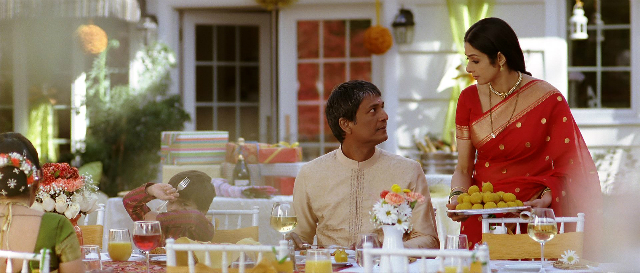

最近見た映画「マダム・イン・ニューヨーク」
- 

英語が苦手な日本人は冒頭30分で共感してしまうだろう
主人公のシャシは西インドの地方都市に暮らす中産階級の専業主婦。お菓子作りはプロ顔負けだが、英語が出来ないため、娘からは学校に来るなと言われ、夫からは「お菓子を作るために生まれてきた」と揶揄され、自信を失って生きている。そんな彼女がニューヨークに暮らす姪の結婚式準備のため単身アメリカに渡り、一念発起して英会話教室に通い始める。そして、教室で新たな友人を作り、フランス人シェフに熱烈なアタックをうけ、英語を習得するうち、次第に自信を取り戻していく………。インド人以上に英語が苦手な日本人は冒頭30分でこの物語に共感してしまうだろう。ニューヨークのカフェでシャシと似たようなイヤな経験をした人も多いのでは。しかし、英語はあくまでストーリーを進めるための乗り物であって、本当のテーマは専業主婦が自尊心を取り戻すことである。
ボリウッド映画、特にファミリー向けの作品に不幸な結末は存在しない。ハッピーエンドは観る前からわかっている。しかし、そこに至るまで小さく右に傾き、左に転びを繰り返し、観ている僕たちはいつのまにかシャシの味方になっている。音楽の使い方の上手さもボリウッド映画ならではだ。お約束のダンスシーンは最後にほんの少々登場するだけだが、シャシの心のうちを描いた歌詞と魅力的なメロディーの歌が様々なシーンでさりげなく散りばめられ、観る者の共感を増幅する。この他、シャシがニューヨークの街で纏う様々なサリーの色合い、美しさにも目が奪われる。中産階級という設定なのにシックすぎるのはこの際黙っておこう（笑）。
ハリウッド映画なら最初にカットしてしまいそうな、ほんの小さなエピソードをいくつも積み重ね、時間をかけて観る者の心をジワジワと捉えていき、爽やかに涙腺をゆるませつつカタルシスへと至る。これこそハリウッド映画やフランス映画とは異なる、ボリウッド映画の文法であり、醍醐味である。キャー・バート・ヘイ（お見事）！（サラーム海上）
解説
英語ができず苦悩する主婦が一念発起して英会話学校に通い、コンプレックスを克服し生きがいを見いだしていく女性賛歌。英会話という小さなきっかけを通して人生の喜びを発見するヒロインの日々を、アクションやミュージカルといったこれまでのインド映画とは異なる語り口で描く。本作で長編デビューを飾る新鋭女性監督ガウリ・シンデーがメガホンを取り、数多くの出演作があるインドの女優シュリーデヴィが主演。感想
インド映画を想像すると大勢で踊って歌ってるだけ、というイメージだったけど、この映画はストーリーがしっかりあって最初から最後まで退屈することなく観れました。見た後に幸せになれる映画です。
そして何といっても主人公のシュリデヴィが美しい・・。
それだけで見る価値アリです。